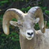
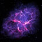
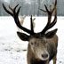

Guidelines for effective use of web graphics.
| Guideline | Reason of Importance |
|---|---|
| 1. | "Graphics should fit in with the purpose, organization, and style of the page" This rule removes redudency and unimportant graphics. |
| 2. | "Avoid using graphics with large file sizes that add to the load time of the page" Now a days people get impatient when websites take a while to load, so shortening graphic file size could keep visitors. |
| 3. | "Graphics should help to guide the viewers’ focus to the important content on the page" Distractions are another way to drive people from your website, if someone cant find something because its hidden within the random distractions, or you guide the focus away from the important stuff people might become frustrated with your website and leave. |
| 4. | "Avoid repetitive use of overly bright or potentially “obnoxious” images" Although something might seem cool to look at at first it might become boring, overused, or annoying and drive people away. |
| 5. | "Avoid the use of graphics to convey textual content information" When viewing a website you might be looking for a certain key word and such but when someone puts their words into the graphics on the page you might not be able to use the keybing Ctrl + F to find anything you are looking for. |
| 6. | "Provide textual equivalent alternatives for graphic content" Some people are unable to view images on their computer or other device, so adding an alt to images to websites can give people an Idea of what would be there. |
| 7. | "When using text in graphics, make sure there is sufficient contrast between the text and the background color" Putting white letters in front of white images or backgrounds makes the webpage really annoying to view and drives everyone away because they are unable to see what you are attempting to show them. |
|  | A big horn sheep standing on rocks in front of some folliage. |
|  | A crab nebula in space. |
An Eagle nebula in space. |
|
|  | Multiple deer hanging out in the middle of a snowy forest. |